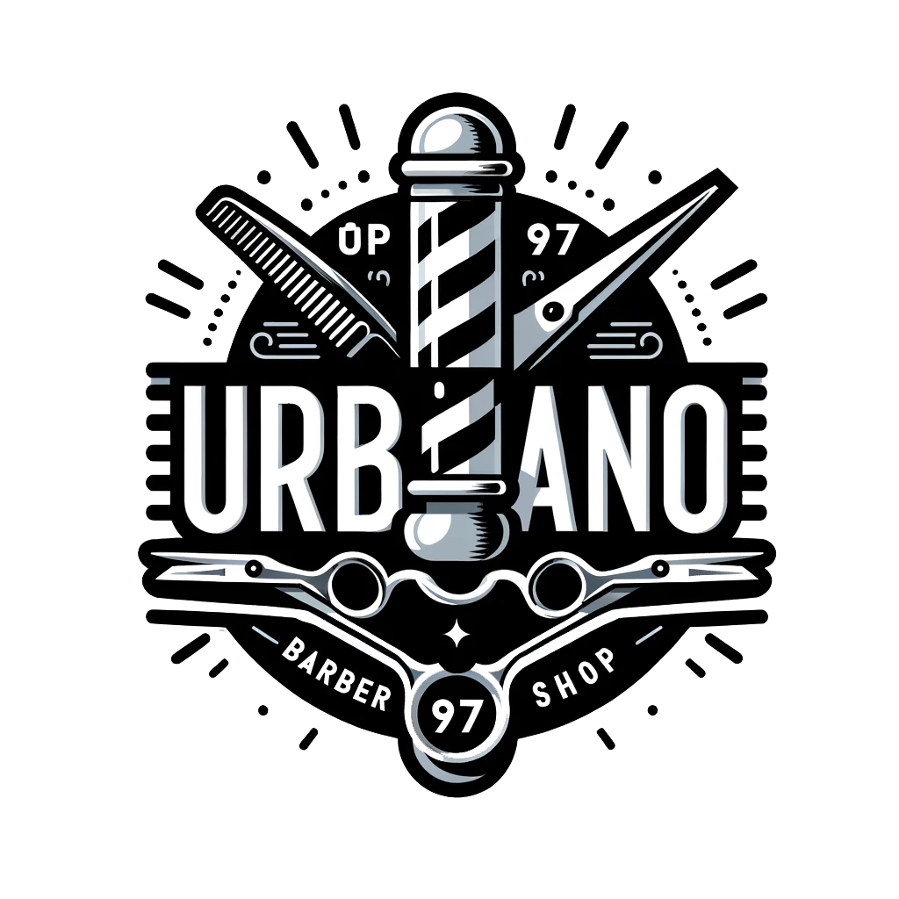

<nav *ngIf="isLoggedIn | async" class="navbar navbar-expand-lg navbar-dark bg-dark">
  <a class="navbar-brand" routerLink="/home">
    
  </a>
  <div class="navbar-toggler-right">
    <button class="navbar-toggler" type="button" data-toggle="collapse" data-target="#navbarNav" aria-controls="navbarNav" aria-expanded="false" aria-label="Toggle navigation">
      <span>Menu</span>
    </button>
  </div>
  <div class="collapse navbar-collapse ml-auto" id="navbarNav">
    <ul class="navbar-nav ml-auto">
      <li class="nav-item active">
        <a class="nav-link" routerLink="/home">Inicio</a>
      </li>
      <li class="nav-item">
        <a class="nav-link" routerLink="/services">Servicios</a>
      </li>
      <li class="nav-item">
        <a class="nav-link" routerLink="/booking">Reserva</a>
      </li>
      <li *ngIf="userType | async as type; else noAdmin" class="nav-item" [ngClass]="{'d-none': type !== 'admin'}">
        <a class="nav-link" routerLink="/qr-scanner">Escanear codigo QR</a>
      </li>
    </ul>
    <div class="nav-item dropdown mr-2">
      <a href="#" id="navbarDropdown" role="button" data-toggle="dropdown" aria-haspopup="true" aria-expanded="false" class="nav-link dropdown-toggle">Mi cuenta</a>
      <div class="dropdown-menu dropdown-menu-right animated fadeIn" aria-labelledby="navbarDropdown">
        <a class="dropdown-item" routerLink="/reservations">{{ (userType | async) === 'admin' ? 'Ver reservas' : 'Mis reservas' }}</a>
        <a class="dropdown-item" routerLink="/change-credentials">Configuracion de cuenta</a>
        <div class="dropdown-divider"></div>
        <button class="dropdown-item" (click)="logout()">Cerrar sesion</button>
      </div>
    </div>
  </div>
</nav>

<ng-template #noAdmin></ng-template>
